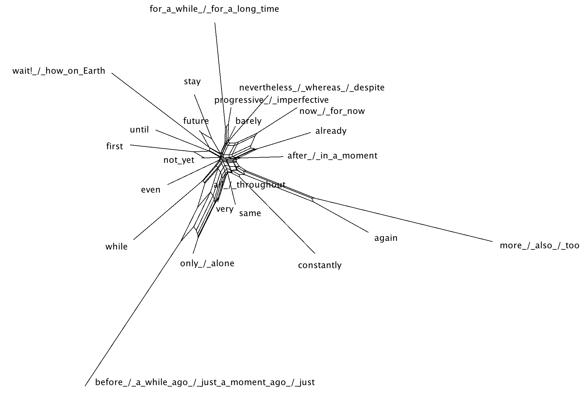

Additive, repetitive and iterative meanings of the continuative
expressions
Continuative expressions functioning as markers of temporal
(non-)simultaneity.
All non-continuative meanings of the continuative expressions.

© Anastasia Panova, 2021-2022